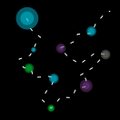
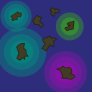
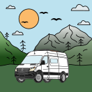
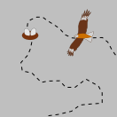
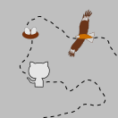
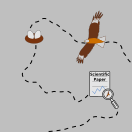

Ursin Beeli
Who I am
I’m a geographer with a strong background in GIS, spatial analysis and environmental sciences.
My academic journey began at the University of Zurich, where I studied geography with a minor in environmental sciences. In my Bachelor’s, I gained a broad understanding of human-environment interactions, which deepened my interest in ecological and spatial topics. During my Master’s, I focused on physical geography and geoinformatics, sharpening my skills in GIS and data-driven spatial analysis.
For my Master’s thesis, I explored the flight behavior of red kites using GPS telemetry and spatial modelling techniques. This work sparked my fascination for geospatial data and how it helps us understand patterns in nature.
After graduating, I worked as a university intern at swisstopo, the Swiss Federal Office of Topography, where I contributed to projects involving elevation models and terrain analysis.
Since then, I’ve turned my long-time dream into reality: living in a self-converted campervan. Together with my partner, I travel across Europe, building open-source visualisations, interactive maps and geospatial projects — always powered by curiosity and solar energy.
Geospatial Portfolio
-

Travel-Cost-Tracker
Interactive webmap for the analysis of the travel expenses during my vanlife journey through Europe. Developed with python & D3.js.
-

Remote Oceania in a changing climate
Interactive webmap for the visualisation of endangered islands in the pacific Ocean. Developed with R & R Shiny.
My Toolkit
-
Geospatial Software:
- QGIS
- ArcGIS Pro
- FME
-
Scripting & Analysis:
- R
- Python
- SQL
-
Web Mapping & Frontent:
- HTML
- CSS
- JS
Additional Projects and Publications
-

Instagram Account of the Van Conversion
Social media documentation of the van conversion and impressions of life in the van in Europe.
-

My Master Thesis
Master thesis about the breeding success of red kites using GPS telemetry.
-

GitHub Repository of my Master Thesis
GitHub repository of my master thesis with the entire R scripts and the thesis (TeX and PDF).
-

Scientific Paper based on my Master Thesis
Publication in Avian Biology based on my master thesis by the Swiss Ornithological Institute.